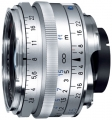

器材库 > 35mm画幅MF定焦镜头 > C Biogon T* 35/2.8 ZM

详细规格
镜头类型
标准镜头
发布日期
2008-04-19
厂家推荐价格
81,900.00 （日元）
焦距
35mm
最大光圈
f/2.8
最小光圈
f/22
光圈叶片
10片
最近对焦距离
70cm
滤镜口径
43mm
防抖
否
颜色
银色, 黑色
尺寸
52 x 29mm
重量
200g
附件
圆形遮光罩
crspo2012-02-25 09:104.58 分
操作性 5.00耐用性 4.00性价比 5.00解像力 4.50色彩还原 4.50机械结构 4.50
产品图 / 样片
镜头外观-银色版
评测 / 相关文章
该产品暂无存档的评测文章